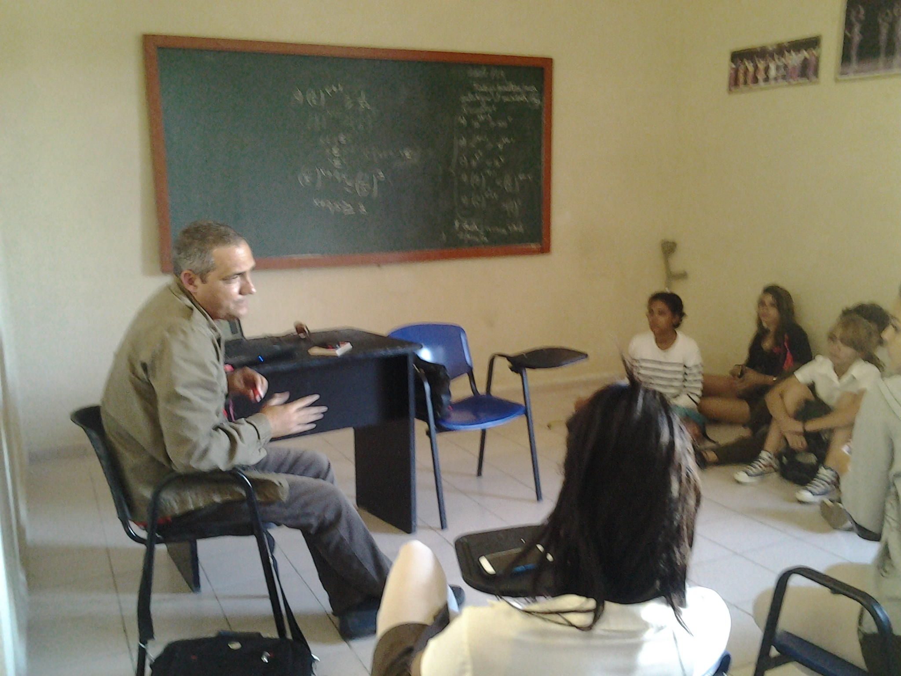
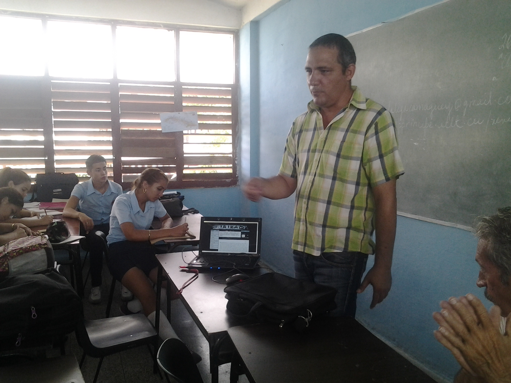

Hace años, en el ya remoto II Congreso de la AHS, leí una intervención titulada “La escuela cubana necesita del arte joven”. Fue un mal paso, o para decirlo llanamente, una gran metedura de pata. Lo confirmé semanas después, con las trasmisiones televisivas dedicadas a la clausura del evento. Ellas recogieron todas las ponencias, menos la mía. A alguien, no a todos por supuesto, debí parecerle un dislate, un cancanear de demente. La única delegada cuyo testimonio pudo hacerme sentir menos raro fue María Antonia Borroto, pero decidió ir al baño en el mismo momento en que Luis Morlote recogía el orden de las intervenciones. Ni esa suerte tuve.

De cualquier manera, ella y yo, es decir La Liga, no volveríamos a hacer una declaración como aquella, preferimos actuar, escribir en el difícil lenguaje de los hechos. De esta convicción nace el concurso “Mi obra literaria favorita”. Con ella a cuestas visitamos una gran cantidad de preuniversitarios; el objetivo: persuadir a sus alumnos de que un pullover, una agenda y tres bolígrafos, eran estímulo suficiente para redactar una reseña sobre una obra literaria contenida en el plan de estudio. A algunos de ellos nuestra propuesta debió sonarles como la mía al censor de la reunión de marras, pero el objetivo se logró. Hubo varios obstáculos, como la lejanía de los centros docentes y la precariedad de un transporte integrado por las confortables guaguas Diana. No quiero mencionar, por vergüenza, el soporte tecnológico utilizado para la proyección de La Liga, una laptop Vit adquirida en la República Bolivariana de Venezuela cuyo teclado decidía rebelarse en el momento más oportuno, el pobre, debió sentirse abochornado entre tanto iPhone y tanto Samsung Galaxy en manos de alumnos, los mismos, advierto, a los que pretendíamos atrapar con tan magra recompensa.

Para completar la quijotada faltaría añadir que ni María Antonia ni yo cobramos un céntimo por esas continuas y fatigosas presentaciones, de hecho, ni siquiera preguntamos si había pago antes de hacerlas. Las hicimos y ya. Es una lástima que la naturaleza no premiara tanto desprendimiento. De ser un poquito más considerada, habría guardado sus mejores dones para el día de la premiación, pero no, todo lo contrario, esa noche el diluvio acabó la sequía y lo que es peor, impidió que la periodista Aymée Amargós asistiera a nuestro acto de cierre. Sí fueron Laura, Álvaro, Alejandro y Bisbe. Sus trabajos engalanan esta sección y nos enseñan que no todo está perdido. Por supuesto, nada hubiera sido posible sin el apoyo incondicional de la filial camagüeyana de la AHS y más específicamente, de su presidente y vicepresidente, Yunielkis Naranjo Guerra y Ihordan Torres Hernández, este último asumió la difícil tarea de diseñar los pullovers, prendas con las que hemos bromeado, pero en las que no dejamos de reconocer una atractiva calidad. Con Ihordan y Yunielkis volveremos a los preuniversitarios de la ciudad pues La Liga solo quiere actuar, escribir en el difícil lenguaje de los hechos.
Cuando leí por primera vez la obra de teatro «La casa de Bernarda Alba», pensé: ¡qué enredo de mujeres!, y hasta me vino a la mente la expresión ¡mujeres!, de aquel personaje de una telenovela cubana. Lógico, fue el primer acercamiento a la obra, orientado por mi profesora. Luego vino el estudio del marco histórico y ¡pum!, se abrió ante mis ojos y se alumbró en mi mente el verdadero mensaje de Lorca: comprendí su simbolismo.
El presente trabajo trata de analizar desde mi punto de vista uno de los cuentos que más me han motivado y me han hecho sentir dentro de la propia historia que narra el escritor. Sin duda alguna hablo de una hermosa historia contada por Franz Kafka. «La metamorfosis», publicada en 1915, narra la historia de Gregorio Samsa, un joven comerciante que, por decirlo así, era el único sustento económico de su familia. Una mañana…
Sin duda es difícil para nosotros leer obras literarias que rebasan con mucho el espacio temporal en que fueron escritas. Al igual que las costumbres y las tradiciones, el ser humano se transforma según las condiciones del momento en que vive. De ello, los mismos jóvenes podemos ofrecer el mejor testimonio. Por esto, en ocasiones, se antoja difícil o poco atractivo emprender la lectura de un libro como El ingenioso hidalgo don Quijote de la Mancha, …
Hace más de 400 años fue escrita la obra literaria El ingenioso hidalgo don Quijote de la Mancha. Miguel de Cervantes Saavedra (1547–1616) escribió la primera parte de este libro infinito alrededor de sus cincuenta años de edad, y lo publicó a principios de 1605. La obra tuvo inmediatamente un éxito tan rotundo, que casi se le exigió a Cervantes la publicación de la segunda parte, para la que trabajó intensamente hasta muy poco tiempo antes de su muerte.